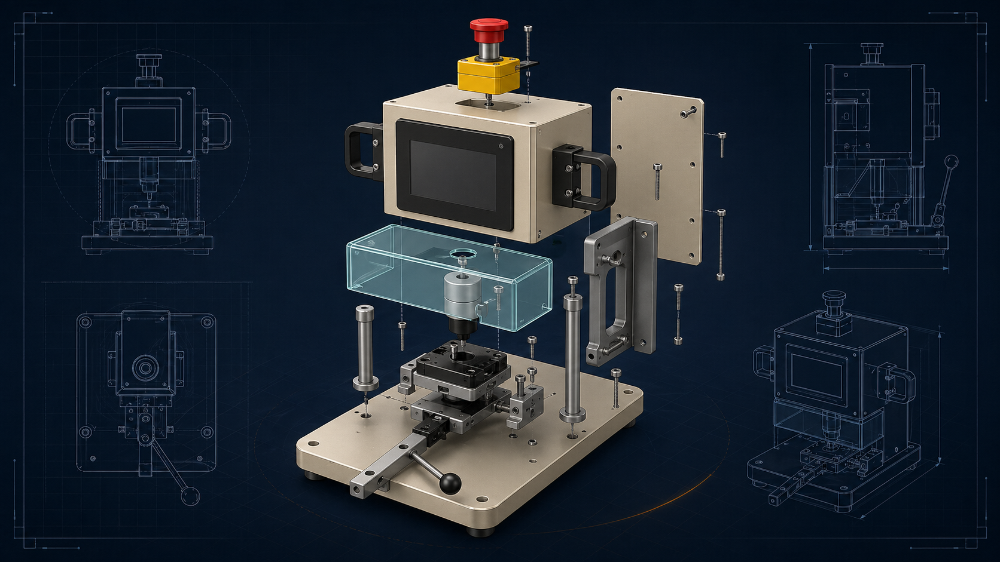

2 days to 40 sec
Inspection staging workflow compressed by turning a manual queue into controlled hardware flow.
EngineeringXYZ helps teams reduce prototype delays, fixture issues, vendor back-and-forth, and build-readiness problems through machine prototypes, inspection systems, engineering drawings, product design refinement, production support, and practical manufacturing engineering support.
Start with the bottleneck, the sketch, the current fixture, or the build-readiness issue.

"In my 30+ years of engineering, Marco is one of the best engineers I have worked with. His knowledge, attitude, and genuine interest are impressive."
Selected feedback from engineering, manufacturing, and product teams who needed technical depth, measured results, and clean execution.
"Marco built custom automated manufacturing equipment with stringent specifications and strong execution discipline."
Mark Wu Director, Zense-Life"Marco designed a mechanical device reducing the number of motors from 49 to 4 while maintaining performance."
Hyeonu Heo EntrepreneurIf you are dealing with prototype delays, fixture issues, vendor back-and-forth, or build-readiness problems, EngineeringXYZ can help you identify practical next steps.
Before teams ask for a new prototype machine, a station retrofit, or a fixture redesign, they are usually already living with a costly pattern of daily friction.
A process survives only because operators compensate for it, and throughput starts falling apart as soon as the volume rises.
Cycle time drags because the machine layout, guarding, or tooling was not shaped around actual operator use.
The bottleneck is obvious, but the right combination of mechanism, tooling, and automation has not been defined yet.
The work centers on hardware programs that need machine prototypes, fixture design, inspection systems, engineering drawings, product design support, and production-ready follow-through without losing time in avoidable iteration.
Prototype design work for hardware teams that need machine architecture, mechanism development, and build-ready direction instead of another stalled concept loop.
See prototype design supportManufacturing engineering support for teams that need practical help with production hardware, operator flow, revision control, and the mechanical decisions that slow builds down.
See production supportFixture design for nests, inspection hardware, locating strategy, and engineering drawings that keep quality, fabrication, and operator use aligned.
See fixture design supportInspection systems and staging equipment shaped around throughput, part handling, routing, and the release documentation needed to move the work forward.
See inspection system supportWe work in the tools your engineers already use.
Experienced with SOLIDWORKS® software, AutoCAD® software, Fusion 360, 2D drafting, 3D CAD modeling, fixture design, mechanical drawings, and manufacturing documentation.
Projects move through a clear engineering rhythm so design decisions stay connected to throughput, safety, and manufacturability.
Scope and build time depend on the machine, but the collaboration path stays simple: align on the bottleneck, review the concept, release the build package, and support startup.
Share the bottleneck, current setup, and what has already been tried.
We define risks, machine approach, review points, and the right prototype path.
Concepts, drawings, fixtures, and hardware details move forward with visible checkpoints.
Startup support, debug feedback, and release-ready output keep delivery grounded.
We start with constraints, failure modes, target cycle time, and how the operator interacts with the system.
Mechanism layout, guarding strategy, part orientation, and station logic get defined around the real production flow.
Frames, tooling, pneumatics, sensors, assembly drawings, and fabrication details are organized so build and assembly can move cleanly.
We keep refining around startup issues, operator feedback, and the production behavior that only shows up after install.

A built production cell focused on coating consistency, controlled handling, and stable process conditions.

A built transfer system that automated stage-to-stage movement and improved process flow.

A compact machine concept built around guarded tooling, operator loading, and controlled benchtop process execution.

A conveyor-based machine that staged dental impression boxes and fixtures for a scanning workflow with much less downtime.
Patent applications filed for both built machines. Public visuals stay abstract while filing is in progress.
Seen enough? Request a Prototype Review →
Not every visitor is ready for a full project scope on day one. These pages create lighter ways to engage while also proving technical depth.
A fuller breakdown of the dental impression scanning challenge, the conveyor-based architecture, and the production result behind one of the strongest projects on the site.
Read the case studyShort technical notes designed to help engineering teams evaluate machine architecture, fixture behavior, and station-level error-proofing before the next equipment push.
Browse technical notesA simple review tool for part handling, operator use, tolerance risk, and release readiness before a new fixture or nest goes to build.
Open the checklistWant to talk it through instead? Request a Prototype Review →
A few direct answers to the questions that usually come up when a team is deciding whether to bring in outside mechanical and production-hardware support.
EngineeringXYZ provides prototype design, fixture design, machine prototypes, inspection systems, engineering drawings, and production support for hardware programs.
EngineeringXYZ works with hardware startups, small manufacturers, R&D teams, and production teams that need practical mechanical engineering support.
Fixture design is the engineering of workholding, locating, clamping, inspection support, and operator interaction so parts can be loaded and processed repeatably.
It usually makes sense when prototype delays, fixture issues, or build-readiness gaps are already slowing the team down and internal bandwidth is too tight to resolve them cleanly.
By clarifying the machine concept, tightening fixture strategy, improving engineering drawings, and resolving mechanical issues before they spread into vendor rework or floor-side iteration.
Ready to discuss your bottleneck? Request a Prototype Review →
Bring the process, the constraint, and the current sticking point. EngineeringXYZ can help clarify whether the next move is prototype design, fixture design, inspection-system work, engineering drawings, or production support.